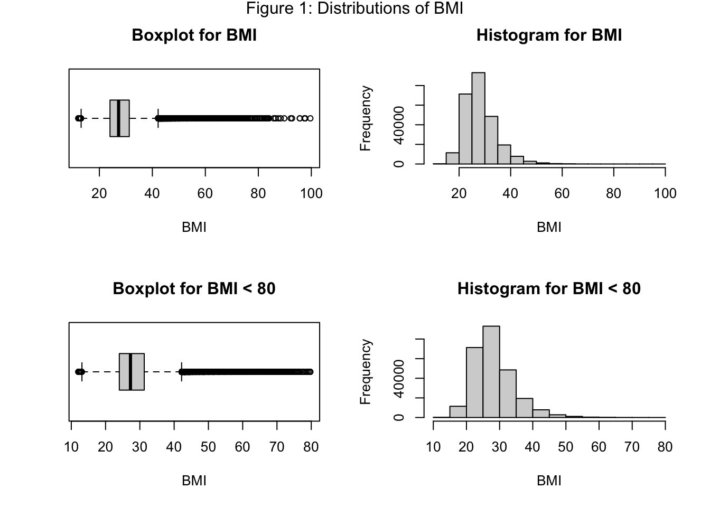
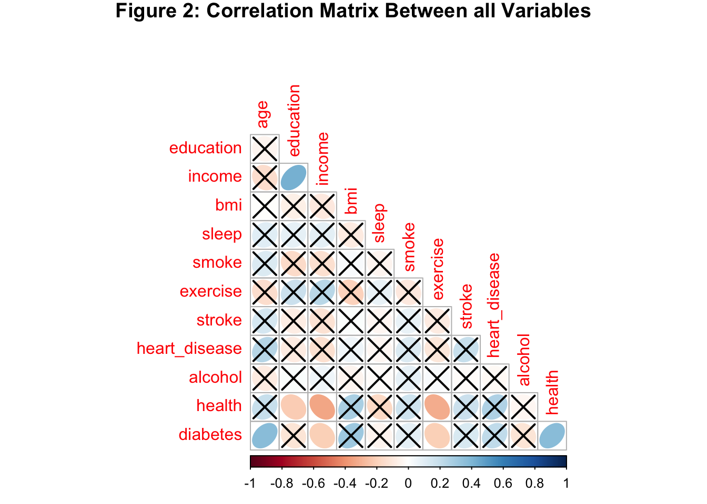
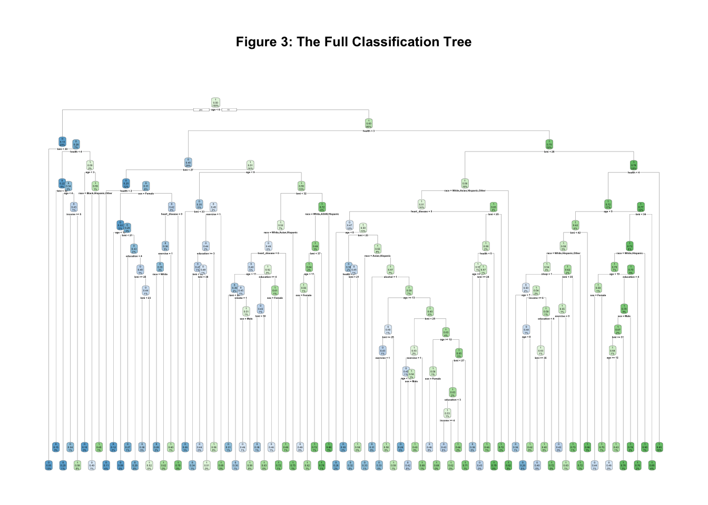
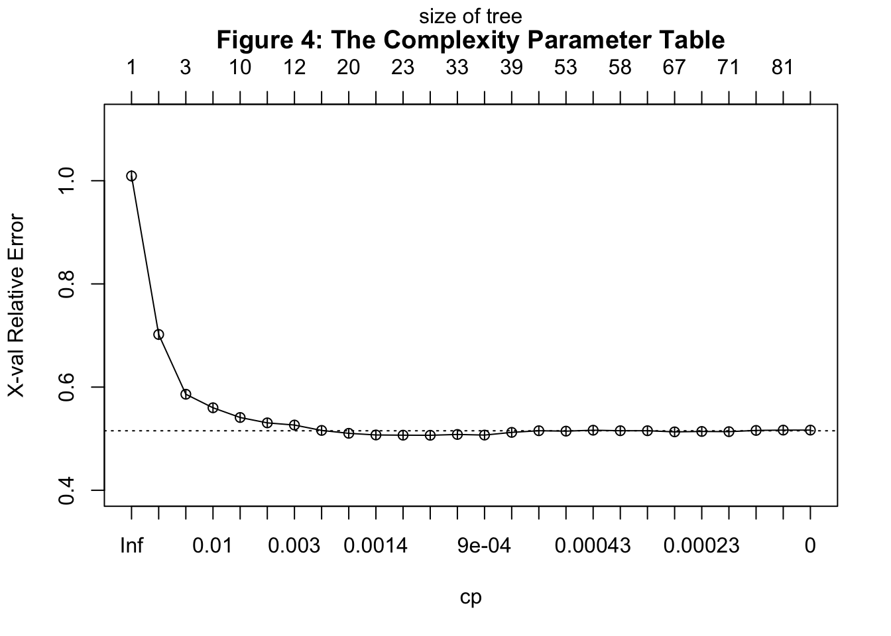
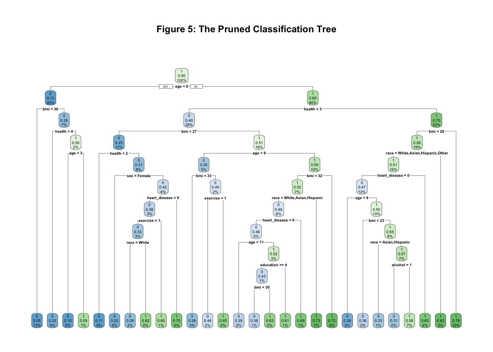
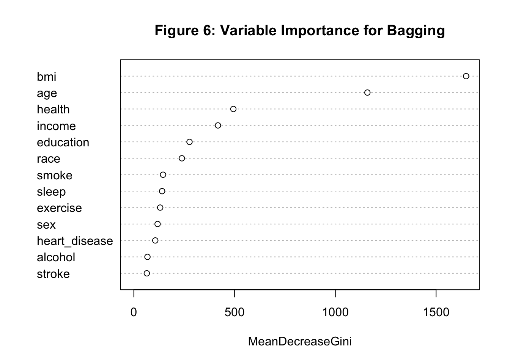
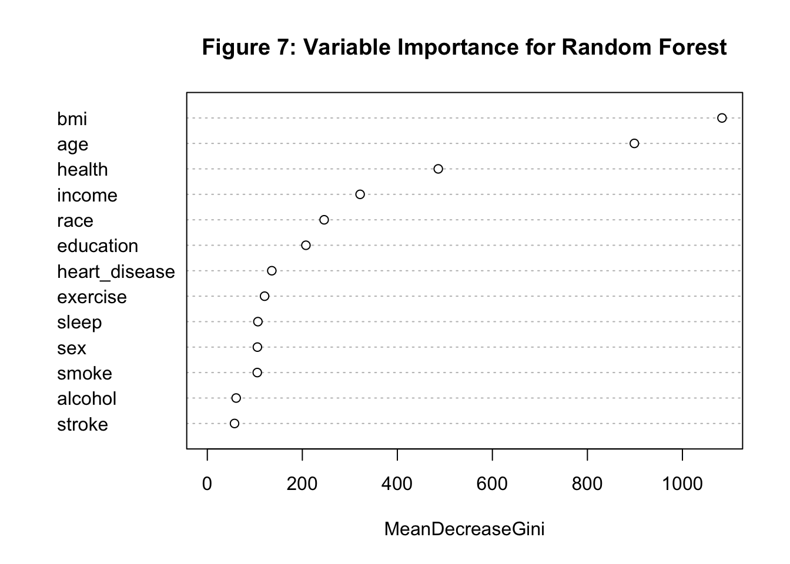
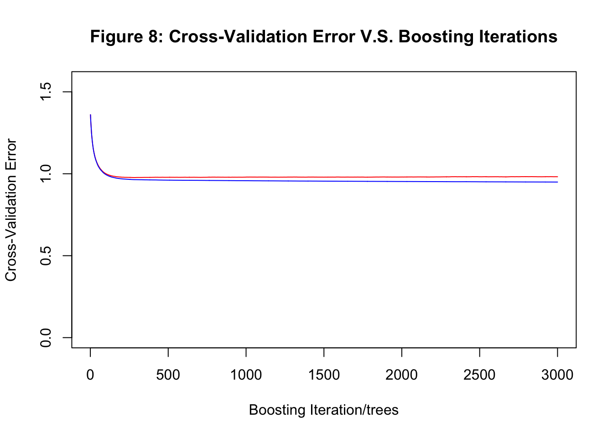
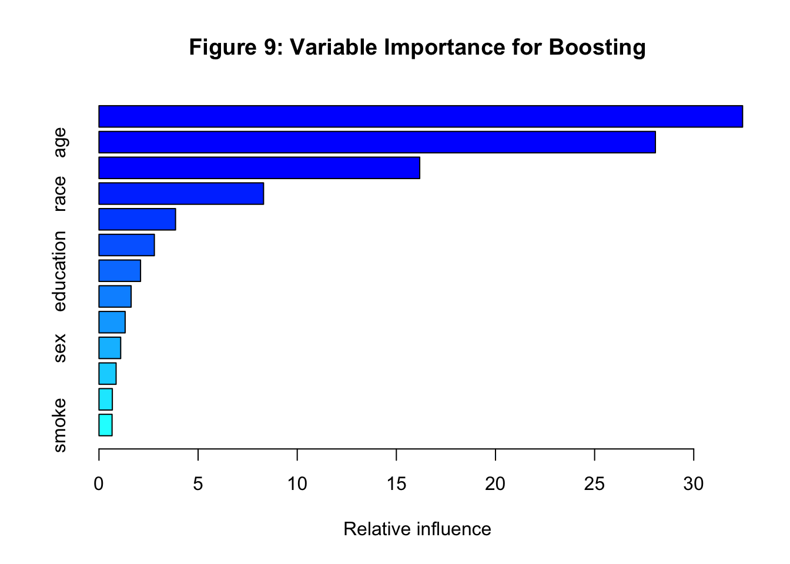

This is the html version of the report. The PDF version of this report can be downloaded here.
Diabetes is a serious chronic disease all over the world. The global prevalence of diabetes continues to skyrocket, exacerbated by a lack of awareness of the disease. In the US, approximately 38.4 million people, which is 11.6% of the US population, had diabetes in 2021 from the statistics in the National Diabetes Statistics Report (CDC 2021) by the Centers for Disease Control and Prevention (CDC).
For long, researchers have been focused on examining the diabetes risks and predicting diabetes in the early stage. There are 2 main kinds of diabetes. By Cafasso (Cafasso 2022), type 1 diabetes is an autoimmune disease likely caused by genes and viruses, while type 2 diabetes is possibly caused by lifestyle factors such as obesity and lack of exercise. Therefore, most researches focus on the potential causes of type 2 diabetes since it is more preventive. Since one of my family members has type 2 diabetes, I’m also interested in the cause of type 2 diabetes and what we can do to prevent ourselves from having type 2 diabetes. Therefore, I would like to explore the risk factors that are most predictive of type 2 diabetes and predict whether an individual has type 2 diabetes given the information provided in the Behavioral Risk Factor Surveillance System (BRFSS) survey data (CDC 2022).
The BRFSS survey, initiated by the CDC, is a state-based cross-sectional telephone survey used to gather prevalence data on risk behaviors and preventive health practices among adult U.S. residents. Since the data is developing annually, I’ll use the newest available BRFSS survey data in 2022 to explore my questions. The dataset contains 445132 rows and 328 columns. Each row corresponds to a respondent. The columns contain the basic information of the respondents, their health conditions, answers to the health-related questions in the survey, and most importantly, whether the respondents have diabetes. Since there are too many columns and my analysis will only use a small portion of the potentially important risk factors, I will not list all the variables and would explain the used variables in the later sections. The meanings of all the variables and their possible values are listed on the documentation website (CDC 2022).
From the relevant paper about some of the potential risk factors with diabetes (Leila Ismail 2021) and the available columns of the survey data, I selected the below columns for future analysis and renamed them for easy understanding.
column name): possible values (meaning of the
value) > renamed column nameResponse variable:
DIABETE4): 1 (Yes), 2
(Only during pregnancy), 3 (No), 4 (No, pre-diabetes or borderline
diabetes), 7 (Don’t know/Not Sure), 9 (Refused) >
diabetesDIABTYPE): 1 (Type 1), 2 (Type 2), 7
(Don’t know/Not Sure), 9 (Refused) >
diabetes_typePredictor variables:
_IMPRACE): 1 (White), 2
(Black), 3(Asian), 4 (American Indian/Alaskan Native), 5 (Hispanic), 6
(Other race) > raceSEXVAR): 1 (Male), 2(Female) >
sex_AGEG5YR): 1
(18 - 24), 2 (25 - 29), 3 (30 -34), 4 (35-39), 5 (40-44), 6 (45 - 49), 7
(50 - 54), 8 (55 - 59), 9 (60 - 64), 10 (65 - 69), 11 (70 - 74), 12 (75
- 79), 13 (80 or older), 14 (Don’t know/Refused/Missing) >
age_EDUCAG): 1 (Did not
graduate High School), 2 (Graduated High School), 3 (Attended College or
Technical School), 4 (Graduated from College or Technical School), 9
(Don’t know/Not sure/Missing) > education_INCOMG1): 1
(Less than $15,000), 2 ($15,000 to < $25,000), 3 ($25,000 to <
$35,000), 4 ($35,000 to < $50,000), 5 ($50,000 to < $100,000), 6
($100,000 to < $200,000), 7 ($200,000 or more), 9 (Don’t know/Not
sure/Missing) > income_BMI5): 1 - 9999 (corresponding BMI)
> bmiSLEPTIM1): 1 - 24 (Number of hours), 77 (Don’t know/Not
Sure), 99 (Refused) > sleepSMOKE100): 1 (Yes), 2 (No), 7 (Don’t know/Not Sure), 9
(Refused) > smokeEXERANY2): 1 (Yes), 2 (No), 7
(Don’t know/Not Sure), 9 (Refused) > exerciseCVDSTRK3): 1 (Yes), 2
(No), 7 (Don’t know/Not Sure), 9 (Refused) >
stroke_MICHD): 1 (Yes), 2 (No) >
heart_disease_RFDRHV8):
1 (No), 2 (Yes), 9 (Don’t know/Refused/Missing) >
alcoholGENHLTH): 1 (Excellent), 2 (Very good), 3 (Good), 4
(Fair), 5 (Poor), 7 (Don’t know/Not Sure), 9 (Refused) >
healthThe filtered dataset has 445132 rows and 15 columns as mentioned above.
Firstly, I checked the values in the variables and found that they are consistent with the description on the website.
Then, I marked all values indicating Don’t know/Not Sure or Refused as NA since they don’t provide useful information to the question. Also, I changed all number of 2 representing no into 0 to make it more consistent with our usage of data.
Since diabetes and diabetes_type are the
important response variables to be predicted, we can check the counts
per category in Table 1. From Table 1, we can see that
there are much more people without diabetes than other categories of
diabetes. And among all people with diabetes, most of them are of type 2
diabetes. Pre-diabetes or borderline diabetes (4) indicates a high risk
of developing diabetes in the future (Tabák
2012). Having diabetes only during pregnancy is called
gestational diabetes, which can be caused by different factors and
increases the risk of having type 2 diabetes (Clinic 2022). Therefore, the lifestyles of
people who diagnosed as pre-diabetes or borderline diabetes or diabetes
only during pregnancy may not be considered representative of healthy
people. And we only compare people with type 2 diabetes
(diabetes = 1 and diabetes_type = 2) with
people who claimed not having diabetes (diabetes = 3).
| diabetes | diabetes_type | n |
|---|---|---|
| 1 | 1 | 1050 |
| 1 | 2 | 10559 |
| 1 | 7 | 966 |
| 1 | 9 | 25 |
| 1 | NA | 48558 |
| 2 | NA | 3836 |
| 3 | NA | 368722 |
| 4 | NA | 10329 |
| 7 | NA | 763 |
| 9 | NA | 321 |
| NA | NA | 3 |
diabetes: change the value to 0 for no diabetes, 1 for
having type 2 diabetes, pre-diabetes, or borderline diabetes. Remove
diabetes_type column. Remove the missing values.Lastly, for some specific variables, I made the following modifications. Some of the categorical variables are ordinal and can be represented by numbers in order. Therefore, I keep the numbers to make the models easier to fit and interpret.
race: change the numbers to the corresponding race
category in characters since it’s nominal. Here, American Indian/Alaska
Native is marked as as AI/AN for short.sex: change 1 to “Male”, and 2 to “Female” for easier
understanding.bmi: divide all values by 100.healthy_sleep: add a variable named
healthy_sleep that categorize >= 7 hours and <= 10
hours of sleep as 1 and other as 0. This is because researches suggest
that regularly sleeping for more than 10 hours a day indicates
oversleeping, which may indicate an underlying health condition (Whelan 2019), and adults need 7 or more hours a
night of sleep for good health. (Olson
2023)The overall missing rate of the data is about 4.07%. The missing
rates of most variables are below 10%, except that bmi has
a missing rate of 10.98%, alcohol has a missing rate of
11.27%, and income has a missing rate of 21.54%. Since our
dataset has 379281 rows after cleaning missing data of
diabetes, which is fairly large, removing some rows with NA
values may not affect the result too much. Therefore, I removed all the
NA values to make the future analysis easier to perform. The resulting
dataset has 256564 rows and 14 columns.
Here, I converted the data type of race and
sex from character to factor. Also, I releveled
race so that the reference group in the future fitted
regression models is White, the majority of
race.
From 2.2, I’ve already checked that the data corresponds to the
description on the website. After the modification, all categorical
variables (including numeric variables representing categories) now only
contain the specified values, which is desired. Therefore, only
bmimay possibly contain unreasonable data or outliers.

From the boxplot and histogram for bmi in Figure
1, we can see that the data is right-skewed with multiple outliers
with values above 45. From the paper (Toshihiko
Yoshizawa 2018), individuals are classified based on body mass
index (BMI) into categories such as underweight (BMI < 18.5), normal
weight (BMI 18.5 to < 25), overweight (BMI 25 to <30), and obese
(BMI \(\geq\) 30), with obesity further
categorized into grades: grade 1 (BMI 30 to <35), grade 2 (BMI 35 to
<40), and grade 3 (BMI \(\geq\) 40).
This paper talks about a fatal case of super-super obesity (BMI >
80), which indicates that such cases are rare. Therefore, I removed all
rows with BMI \(\geq\) 80 so that the
results are more general. From the plots of the dataset with BMI < 80
in Figure 1, we can see that the distribution of BMI is still
right-skewed with most data between 20 and 40.
From Table 1, there are much more people without diabetes than with diabetes, which may affect the performance of the model. Therefore, downsampling the majority class is performed on the dataset to make the two classes contain equal number of observations.
After removing all the outliers and downsampling the dataset, the dataset now contains 14316 rows and 14 columns.
diabetes. If the correlations between predictors are too
high, multicollinearity need to be checked after fitting the linear
model using variance inflation factor (VIF).diabetes. stepAIC is
performed to find the model with the smallest AIC.diabetes.
Then, it is pruned based on the optimal complexity parameter.diabetes
suggested by the corresponding model.The minimum, maximum, mean, standard deviation, count, and the
quantiles of bmi are listed in Table 2 below.
| Variable | Count | Mean | Standard Deviation | Min | 1st Quantile | Median | 3rd Quantile | Max |
|---|---|---|---|---|---|---|---|---|
| bmi | 256531 | 28 | 6.2 | 12 | 24 | 27 | 31 | 80 |
From Table 2, we can see that bmi fall in the
range that I designed before, and the mean (28) is a bit larger than the
median (27), indicating the slightly right-skewed distribution as shown
in Figure 1.
| Variable | Overall, N = 14,3161 | Negative, N = 7,1581 | Positive, N = 7,1581 | p-value2 |
|---|---|---|---|---|
| race | <0.001 | |||
| White | 10,902 (76%) | 5,545 (77%) | 5,357 (75%) | |
| AI/AN | 314 (2.2%) | 77 (1.1%) | 237 (3.3%) | |
| Asian | 252 (1.8%) | 208 (2.9%) | 44 (0.6%) | |
| Black | 1,668 (12%) | 502 (7.0%) | 1,166 (16%) | |
| Hispanic | 851 (5.9%) | 638 (8.9%) | 213 (3.0%) | |
| Other | 329 (2.3%) | 188 (2.6%) | 141 (2.0%) | |
| sex | 0.10 | |||
| Female | 7,082 (49%) | 3,590 (50%) | 3,492 (49%) | |
| Male | 7,234 (51%) | 3,568 (50%) | 3,666 (51%) | |
| age | <0.001 | |||
| 18 - 24 | 490 (3.4%) | 477 (6.7%) | 13 (0.2%) | |
| 25 - 29 | 427 (3.0%) | 410 (5.7%) | 17 (0.2%) | |
| 30 - 34 | 539 (3.8%) | 491 (6.9%) | 48 (0.7%) | |
| 35 - 39 | 623 (4.4%) | 527 (7.4%) | 96 (1.3%) | |
| 40 - 44 | 840 (5.9%) | 636 (8.9%) | 204 (2.8%) | |
| 45 - 49 | 855 (6.0%) | 523 (7.3%) | 332 (4.6%) | |
| 50 - 54 | 1,159 (8.1%) | 604 (8.4%) | 555 (7.8%) | |
| 55 - 59 | 1,305 (9.1%) | 576 (8.0%) | 729 (10%) | |
| 60 - 64 | 1,636 (11%) | 647 (9.0%) | 989 (14%) | |
| 65 - 69 | 1,915 (13%) | 653 (9.1%) | 1,262 (18%) | |
| 70 - 74 | 1,918 (13%) | 633 (8.8%) | 1,285 (18%) | |
| 75 - 79 | 1,360 (9.5%) | 451 (6.3%) | 909 (13%) | |
| 80 or older | 1,249 (8.7%) | 530 (7.4%) | 719 (10%) | |
| education | <0.001 | |||
| Attended College or Technical School | 4,146 (29%) | 1,905 (27%) | 2,241 (31%) | |
| Did not graduate High School | 793 (5.5%) | 340 (4.7%) | 453 (6.3%) | |
| Graduated from College or Technical School | 5,767 (40%) | 3,317 (46%) | 2,450 (34%) | |
| Graduated High School | 3,610 (25%) | 1,596 (22%) | 2,014 (28%) | |
| income | <0.001 | |||
| $100,000 to < $200,000 | 2,531 (18%) | 1,627 (23%) | 904 (13%) | |
| $15,000 to < $25,000 | 1,601 (11%) | 605 (8.5%) | 996 (14%) | |
| $200,000 or more | 684 (4.8%) | 542 (7.6%) | 142 (2.0%) | |
| $25,000 to < $35,000 | 1,994 (14%) | 848 (12%) | 1,146 (16%) | |
| $35,000 to < $50,000 | 2,078 (15%) | 900 (13%) | 1,178 (16%) | |
| $50,000 to < $100,000 | 4,396 (31%) | 2,268 (32%) | 2,128 (30%) | |
| Less than $15,000 | 1,032 (7.2%) | 368 (5.1%) | 664 (9.3%) | |
| sleep | <0.001 | |||
| Sleep < 7 or > 10 hours | 5,087 (36%) | 2,375 (33%) | 2,712 (38%) | |
| Sleep between 7 and 10 hours (inclusive) | 9,229 (64%) | 4,783 (67%) | 4,446 (62%) | |
| smoke | <0.001 | |||
| Smoked More Than 100 Cigarettes | 6,478 (45%) | 2,899 (41%) | 3,579 (50%) | |
| Smoked No More Than 100 Cigarettes | 7,838 (55%) | 4,259 (59%) | 3,579 (50%) | |
| exercise | <0.001 | |||
| Exercised | 10,082 (70%) | 5,721 (80%) | 4,361 (61%) | |
| No Exercise | 4,234 (30%) | 1,437 (20%) | 2,797 (39%) | |
| stroke | <0.001 | |||
| Had Stroke | 978 (6.8%) | 238 (3.3%) | 740 (10%) | |
| Never Had Stroke | 13,338 (93%) | 6,920 (97%) | 6,418 (90%) | |
| heart_disease | <0.001 | |||
| Had Heart Disease | 2,166 (15%) | 523 (7.3%) | 1,643 (23%) | |
| Never Had Heart Disease | 12,150 (85%) | 6,635 (93%) | 5,515 (77%) | |
| alcohol | <0.001 | |||
| Heavy Drinker | 792 (5.5%) | 585 (8.2%) | 207 (2.9%) | |
| Non-Heavy Drinker | 13,524 (94%) | 6,573 (92%) | 6,951 (97%) | |
| health | <0.001 | |||
| Excellent | 1,563 (11%) | 1,315 (18%) | 248 (3.5%) | |
| Fair | 2,760 (19%) | 808 (11%) | 1,952 (27%) | |
| Good | 4,980 (35%) | 2,196 (31%) | 2,784 (39%) | |
| Poor | 1,026 (7.2%) | 214 (3.0%) | 812 (11%) | |
| Very good | 3,987 (28%) | 2,625 (37%) | 1,362 (19%) | |
| 1 n (%) | ||||
| 2 Pearson’s Chi-squared test | ||||
From Table 3, the distributions of sex and
smoke are roughly the same among the two categories, which
is a good sign indicating unbiasedness of the predictor in the
dataset.
The distributions of age, income, and
health are normal with most people in the middle categories
and fewer people in the extreme categories, which corresponds with the
real-world situation as expected.
However, there are much more white people than other races, and much
more people who had appropriate hours of sleep or exercised or never had
stroke or heart disease than the opposite. This also accords with the
actual situation since the survey is performed in the US and there are
more healthy people in the world. Additionally, education proportion
suggests that this study population is on the more well educated side
than average. This bias is not present in a study that explores the
relationship between diabetes and education (Borrell LN 2006), which is of concern. All of
these may present bias in the analysis, which may require future
investigation. All Pearson’s Chi-squared tests except sex have a p-value
of less than 0.001, indicating strong evidence against the null
hypothesis that the observed differences within the categories appear by
chance. Sex may not be a good indicator from the test.
All data visualization and analysis can be found on the website Home and Visualization page. To distinguish the plot on the website and the figures in the report, I would use Plot + number to represent the plots on the website and Figure + number to represent figures in the report.
From the Plot 1, we can figure out the distributions of BMI
among people with diabetes and people without diabetes. The boxplot
suggests that bmi is positively correlated with diabetes
since people with diabetes tend to have higher BMI.
Plot 2 shows the distribution of age for people with
diabetes and people without diabetes. The plot indicates that
age may have a positive relationship with diabetes since
most people with diabetes have age over 50.
Plots 3-13 are the proportional barplots of diabetes among
different categories in the categorical variables. From the patterns in
those plots, we may infer that smoke, stroke,
and heart_disease are positively correlated with diabetes,
while income, education, sleep,
exercise, alcohol, and health
have a negative relationship with diabetes. Among them, the most
surprising result is that drinking more alcohol leads to a
heavy drop in proportion of having diabetes, which may
require future investigation.
More machine learning techniques are required to reach more rigorous
conclusions about the relationships between the predictors and the
response variable diabetes.
| age | education | income | bmi | sleep | smoke | exercise | stroke | heart_disease | alcohol | health | diabetes | |
|---|---|---|---|---|---|---|---|---|---|---|---|---|
| Diabetes | 0.3769136 | -0.1128349 | -0.2048007 | 0.3115016 | -0.0491838 | 0.0954302 | -0.2081566 | 0.1389917 | 0.2183236 | -0.1154986 | 0.3706679 | 1 |

From the diabetes row of the correlation matrix in
Table 4, we can see that none of the variables have a very
strong correlation with diabetes. However, among them, age,
bmi, and health have a relatively strong
correlation with diabetes (absolute value greater than 0.3).
Additionally, sleep and smoke have a
relatively weak correlation with diabetes (absolute value less than
0.1). Especially, sleep has the smallest relative
correlation -0.0491838, which indicates that it may not be a good
indicator of diabetes.
From the correlation plot in Figure 2, the correlation
coefficients between diabetes and age,
income, exercise, health are
statistically significant, which indicates that they may be important
risk factors. However, the correlation between health and
three other variables, income and education
are statistically significant. After checking the correlations, their
absolute values are below 0.3, which seems fine. But VIF may be used to
check multicollinearity after fitting the linear model.
Here, the dataset is splitted into 70% for training and 30% for testing. This is used to compare the performance of different models and select the model with best test accuracy.
After the splitting, the training data contains 10021 rows, and the testing data has 4295 rows.
A logistic regression model between diabetes and all the other possible predictor variables is fitted to check whether the variable is statistically significant based on the p-value of the linear model. The summary of the model is as below.
| diabetes | |||||
|---|---|---|---|---|---|
| Predictors | Odds Ratios | std. Error | CI | Statistic | p |
| (Intercept) | 0.00 | 0.00 | 0.00 – 0.00 | -29.58 | <0.001 |
| raceAI/AN | 3.81 | 0.69 | 2.68 – 5.49 | 7.34 | <0.001 |
| raceAsian | 0.71 | 0.15 | 0.46 – 1.07 | -1.58 | 0.113 |
| raceBlack | 2.52 | 0.20 | 2.15 – 2.96 | 11.35 | <0.001 |
| raceHispanic | 0.54 | 0.06 | 0.43 – 0.68 | -5.21 | <0.001 |
| raceOther | 1.11 | 0.19 | 0.80 – 1.55 | 0.65 | 0.517 |
| sexMale | 1.30 | 0.07 | 1.18 – 1.43 | 5.15 | <0.001 |
| age | 1.31 | 0.01 | 1.29 – 1.34 | 28.37 | <0.001 |
| education | 1.00 | 0.03 | 0.94 – 1.06 | -0.05 | 0.959 |
| income | 0.94 | 0.02 | 0.91 – 0.98 | -3.12 | 0.002 |
| bmi | 1.11 | 0.00 | 1.10 – 1.12 | 25.16 | <0.001 |
| sleep | 0.89 | 0.05 | 0.80 – 0.99 | -2.14 | 0.032 |
| smoke | 1.02 | 0.05 | 0.92 – 1.12 | 0.33 | 0.739 |
| exercise | 0.79 | 0.05 | 0.71 – 0.88 | -4.09 | <0.001 |
| stroke | 1.24 | 0.13 | 1.01 – 1.52 | 2.09 | 0.037 |
| heart_disease | 1.62 | 0.12 | 1.40 – 1.88 | 6.39 | <0.001 |
| alcohol | 0.42 | 0.05 | 0.33 – 0.53 | -7.37 | <0.001 |
| health | 1.67 | 0.05 | 1.58 – 1.76 | 18.54 | <0.001 |
| Observations | 10021 | ||||
| R2 Tjur | 0.338 | ||||
diabetes well.The other variables can be interpreted from the table in similar ways.
Most coefficients are statistically significant at the 0.001
significance level with p-values <0.001, except for
raceAsian, raceOther, education,
sleep, smoke, and stroke. While
sleep and stroke is significant at the 0.05
level, other variables have large p-values that indicate they don’t have
a statistically significant linear association with the log-odds of
having diabetes. Especially education has an odds ratio of
1 with a p-value 0.959, which is very close to 1. This indicates there’s
no linear correlation between education and the log odds of
diabetes. For similar reasons, smoke also
lacks correlation with diabetes. Since the other variables
are statistically significant, they may be important risk factors of
diabetes.
The test accuracy of the model is 75.62%. The test MSE is about 0.1652.
| diabetes | |||||
|---|---|---|---|---|---|
| Predictors | Odds Ratios | std. Error | CI | Statistic | p |
| (Intercept) | 0.00 | 0.00 | 0.00 – 0.00 | -30.98 | <0.001 |
| raceAI/AN | 3.83 | 0.70 | 2.69 – 5.51 | 7.37 | <0.001 |
| raceAsian | 0.71 | 0.15 | 0.46 – 1.07 | -1.61 | 0.108 |
| raceBlack | 2.51 | 0.20 | 2.15 – 2.95 | 11.36 | <0.001 |
| raceHispanic | 0.54 | 0.06 | 0.43 – 0.68 | -5.23 | <0.001 |
| raceOther | 1.12 | 0.19 | 0.80 – 1.55 | 0.65 | 0.514 |
| sexMale | 1.30 | 0.07 | 1.18 – 1.43 | 5.21 | <0.001 |
| age | 1.31 | 0.01 | 1.29 – 1.34 | 28.42 | <0.001 |
| income | 0.94 | 0.02 | 0.91 – 0.98 | -3.42 | 0.001 |
| bmi | 1.11 | 0.00 | 1.10 – 1.12 | 25.16 | <0.001 |
| sleep | 0.89 | 0.05 | 0.80 – 0.99 | -2.15 | 0.031 |
| exercise | 0.79 | 0.05 | 0.71 – 0.88 | -4.13 | <0.001 |
| stroke | 1.24 | 0.13 | 1.02 – 1.52 | 2.10 | 0.036 |
| heart_disease | 1.62 | 0.12 | 1.40 – 1.88 | 6.42 | <0.001 |
| alcohol | 0.42 | 0.05 | 0.34 – 0.53 | -7.38 | <0.001 |
| health | 1.67 | 0.05 | 1.58 – 1.76 | 18.67 | <0.001 |
| Observations | 10021 | ||||
| R2 Tjur | 0.338 | ||||
After performing stepAIC, the AIC reduced from 10031.23 to 10027.35,
which is a small reduction. The variables education and
smoke are removed as their coefficients are not
statistically significant. The resulting model has all the predictor
variables significant with level 0.05 except for the categories Asian
and Other in race. The \(R^2\) Tjur remains the same.
The test accuracy of the model is approximately 75.69% with a test mse of 0.1652, which are both slightly higher than the full model.
| GVIF | Df | GVIF^(1/(2*Df)) | |
|---|---|---|---|
| race | 1.117259 | 5 | 1.011149 |
| sex | 1.048967 | 1 | 1.024191 |
| age | 1.218199 | 1 | 1.103720 |
| income | 1.186857 | 1 | 1.089430 |
| bmi | 1.104427 | 1 | 1.050917 |
| sleep | 1.069544 | 1 | 1.034188 |
| exercise | 1.094540 | 1 | 1.046202 |
| stroke | 1.052190 | 1 | 1.025763 |
| heart_disease | 1.096749 | 1 | 1.047258 |
| alcohol | 1.004586 | 1 | 1.002290 |
| health | 1.190859 | 1 | 1.091265 |
Based on the correlation matrix in Figure 2, multicollinearity may be of concern. Therefore, the VIF of the variables are calculated in the AIC-selected logistic regression model. Since all values are close to 1 and far below 5 in Table 7, there is no existence of multicollinearity.
A classification tree is fitted to predict diabetes,
which is shown in Figure 3. Then, it is pruned based on the
optimal complexity parameter. The complexity parameter table is shown in
Figure 4 and the pruned tree is in Figure 5.
After pruning, there are much fewer nodes and number of splits in the
tree. The variables used in the pruned tree are age,
alcohol, bmi, education,
exercise, health, heart_disease,
race, and sex, which indicates that they are
important predictors suggested by the tree.
The full tree has a test accuracy of 73.34% and an MSE of 0.1748. The test accuracy of the pruned tree is about 74.76% and the MSE is about 0.1737. Since the accuracy is lower and the MSE is higher than the logistic regression model, the pruned classification tree performs a bit worse than the AIC-selected logistic regression model.


Bagging is used to predict diabetes. From the variable importance
plot in Figure 6, the variables bmi and
age have relatively high importance compared with the other
variables. Therefore, bmi and age are
important predictors of diabetes as suggested by
bagging.
Bagging reaches a test accuracy of approximately 73.87%, which is lower than the pruned tree and GLM model.

Random forest is used to predict diabetes. From the variable
importance plot in Figure 7, the variables bmi and
age have relatively high importance compared with the other
variables, which is the same as the results of bagging.
Random forest has a test accuracy of about 75.55%, which is higher than the pruned tree and bagging but lower than the GLM model.

A gradient boosting machine is fitted to predict diabetes. From the Figure 8, the cross-validation error continues to decrease as the number of trees increases, but in a much slower speed when the number of trees is 3000. Therefore, additional boosting iteration are not performed for runtime-performance balance.
Based on the variable importance plot in Figure 9, the
variables bmi, age, and health
have relatively high importance compared with the other variables, which
contains the results of bagging and random forest.
The test accuracy of boosting is about 76.30%, which is the highest among all models so far. The test MSE of boosting is 0.1596, which is also the lowest among all previous models.

An xgboost model is supposed to be trained to predict
diabetes. To tune the maximum depth of the tree, the number
of trees, and the learning rate, a grid search needs to be performed.
During the process, a 10-fold cross-validation is used to evaluate the
model performance.
The variable importance of extreme gradient boosting would be shown in Figure 10. The test accuracy and MSE for extreme gradient boosting would also be calculated through the code.
However, due to the large dataset and lack of computer power, the code used for extreme gradient boosting cannot terminate even after a few hours of running. Therefore, the results and performance of the xgboost model are left as the future work to be done.
The Table 8 below contains the selected important predictors, test accuracy, and test MSE for each of the machine learning models fitted.
| AIC-Logistic Regression | Full Classification Tree | Pruned Classification Tree | Bagging | Random Forest | Boosting | |
|---|---|---|---|---|---|---|
| race | ✓ | ✓ | ✓ | ✓ | ✓ | ✓ |
| sex | ✓ | ✓ | ✓ | |||
| age | ✓ | ✓ | ✓ | ✓ | ✓ | ✓ |
| education | ✓ | ✓ | ✓ | ✓ | ||
| income | ✓ | ✓ | ✓ | ✓ | ✓ | |
| sleep | ✓ | ✓ | ||||
| smoke | ✓ | |||||
| bmi | ✓ | ✓ | ✓ | ✓ | ✓ | ✓ |
| exercise | ✓ | ✓ | ✓ | |||
| stroke | ✓ | |||||
| heart_disease | ✓ | ✓ | ✓ | ✓ | ||
| alcohol | ✓ | ✓ | ✓ | |||
| health | ✓ | ✓ | ✓ | ✓ | ✓ | ✓ |
| Test Accuracy | 75.69% | 73.34% | 74.76% | 73.87% | 75.55% | 76.30% |
| Test MSE | 0.1652 | 0.1748 | 0.1737 | 0.1596 |
Based on Table 8, the test accuracies among all models are all around 75% and the test MSEs are all about 0.165. Among them, boosting model has the highest test accuracy and lowest test MSE, which indicates that it is the best model among all the models fitted here.
Among all the predictors, race, age,
bmi, and health are considered as important in
all the models. education has high variable importance in
all models except the AIC-selected logistic regression model. Therefore,
those 5 variables may be most predictive of diabetes as
suggested by the fitted models.
However, the models fitted using the survey data can only suggest
correlations between the predictors and diabetes but cannot
prove causal relationships. We cannot conclude which is the cause and
which is the effect. Therefore, we are still uncertain about the risk
factors of diabetes but at least we find some important
predictors and can predict diabetes at an accuracy of
76.30%.
Since the data is based on self-reported surveys, there may be flaws in the answers. Additionally, many other risk factors are worth researching. Therefore, more accurate scientific research data needs to be analyzed to get more reliable results.
I hope that this research can offer some insights into how we can prevent ourselves from having Type 2 Diabetes.